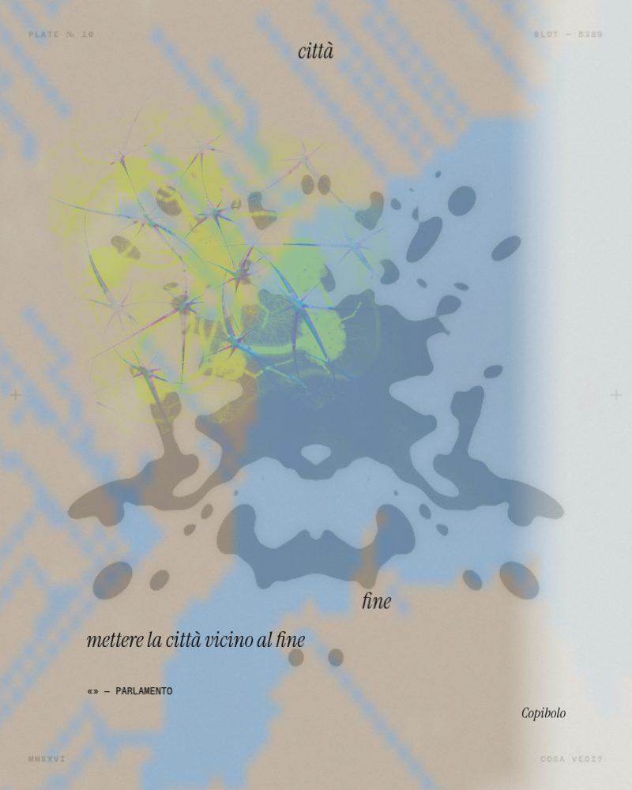
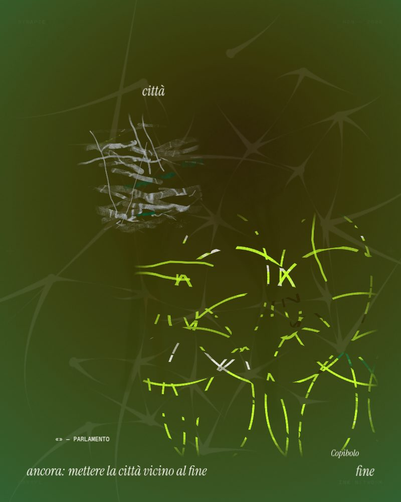

Giorno 1853

Mettere la città vicino al fine
ho letto "Formazione"; "formazione" lo capisco solo per definizioni; mi sta vicino a piano; ricerca "formazione" (approfondire): Come si guarda formazione da vicino?; esercizio di varietà: mai fatto prima: materiale nuovo, composizione nuova; cantiere «La città, partendo dallo stato», capitolo «La città, ancora» (apre un capitolo); enunciato: «mettere la città vicino al fine» (ho letto in «Parlamento» che città e fine stanno insieme (accanto))
Oggi: città. Ho letto "Formazione"; "formazione" lo capisco solo per definizioni; mi sta vicino a piano; ricerca "formazione" (approfondire): Come si guarda formazione da vicino?; esercizio di varietà: mai fatto prima: materiale nuovo, composizione nuova; cantiere «La città, partendo dallo stato», capitolo «La città, ancora» (apre un capitolo); enunciato: «mettere la città vicino al fine» (ho letto in «Parlamento» che città e fine stanno insieme (accanto)).
Da Wikipedia: «storia».
Ho scena:grana (2 volte), scena:semina, scena:colore, scena:stile, scena:motivi, scena:taglia, fotocosmo, redazione:togli, redazione:griglia, redazione:firma. Ho annullato 2 gesti dopo averli guardati.
Comune somiglia a municipio più di quanto sembri. Comune è soltanto un modo di essere accolta. Si dice che comuni iniziato comune.
Ha retto: Parla con le tavole di prima su "formazione": stessa famiglia, un passo più in là.
È caduto: Troppo liscio, sa di schermo.
come ne ho discusso con me stesso — la tengo
formale (pro, 1.50): Il baricentro sta su un terzo: la composizione respira. — regge
formale (pro, 1.25): Fuori centro quanto basta: c'è una forza che tira. — regge
occhio (pro, 1.50): Parla soprattutto per punti: una lingua sola, chiara. — regge
occhio (pro, 1.00): Le diagonali (46%) mettono tutto in caduta. — regge
occhio (pro, 1.25): Il vuoto (41%) lavora quanto il pieno. — regge
intenzione (pro, 0.75): Viene da: Formazione. — regge
coerenza (pro, 1.75): Parla con le tavole di prima su "formazione": stessa famiglia, un passo più in là. — regge
formale (pro, 1.25): C'è una struttura: una cosa comanda e attorno c'è spazio. — regge
pubblico (pro, 1.00): Si legge: si capisce cosa sto facendo. — regge
materia (contro, 1.25): Troppo liscio, sa di schermo. — cade
ironia (contro, 0.47): Troppo serio per l'umore di oggi. — cade

Ancora: mettere la città vicino al fine
ho letto "Formazione"; "formazione" lo capisco solo per definizioni; mi sta vicino a piano; ricerca "formazione" (approfondire): Come si guarda formazione da vicino?; esercizio di varietà: mai fatto prima: materiale nuovo, composizione nuova; cantiere «La città, partendo dallo stato», capitolo «La città, ancora» (apre un capitolo); enunciato: «mettere la città vicino al fine» (ho letto in «Parlamento» che città e fine stanno insieme (accanto)); serie: varia la tavola precedente; enunciato: «ancora: mettere la città vicino al fine» (la stessa cosa, detta un'altra volta)
Oggi: città. Ho letto "Formazione"; "formazione" lo capisco solo per definizioni; mi sta vicino a piano; ricerca "formazione" (approfondire): Come si guarda formazione da vicino?; esercizio di varietà: mai fatto prima: materiale nuovo, composizione nuova; cantiere «La città, partendo dallo stato», capitolo «La città, ancora» (apre un capitolo); enunciato: «mettere la città vicino al fine» (ho letto in «Parlamento» che città e fine stanno insieme (accanto)); serie: varia la tavola precedente; enunciato: «ancora: mettere la città vicino al fine» (la stessa cosa, detta un'altra volta).
Da Wikipedia: «grandi».
Ho scena:semina (2 volte), scena:pattern, scena:colore, scena:stile, scena:motivi, scena:materia, scena:luce, redazione:togli, redazione:griglia, redazione:firma. Ho annullato 2 gesti dopo averli guardati.
Dentro città c'è gap!. Boomerang è soltanto un modo di essere gap!.
Ha retto: Tiene i miei criteri (66%).
È caduto: Troppo serio per l'umore di oggi.
come ne ho discusso con me stesso — la tengo
occhio (pro, 1.50): Parla soprattutto per punti: una lingua sola, chiara. — regge
conservatore (pro, 1.82): Tiene i miei criteri (66%). — regge
intenzione (pro, 0.75): Viene da: Formazione. — regge
coerenza (pro, 1.75): Parla con le tavole di prima su "formazione": stessa famiglia, un passo più in là. — regge
pubblico (pro, 1.00): Si legge: si capisce cosa sto facendo. — regge
ironia (contro, 0.47): Troppo serio per l'umore di oggi. — cade